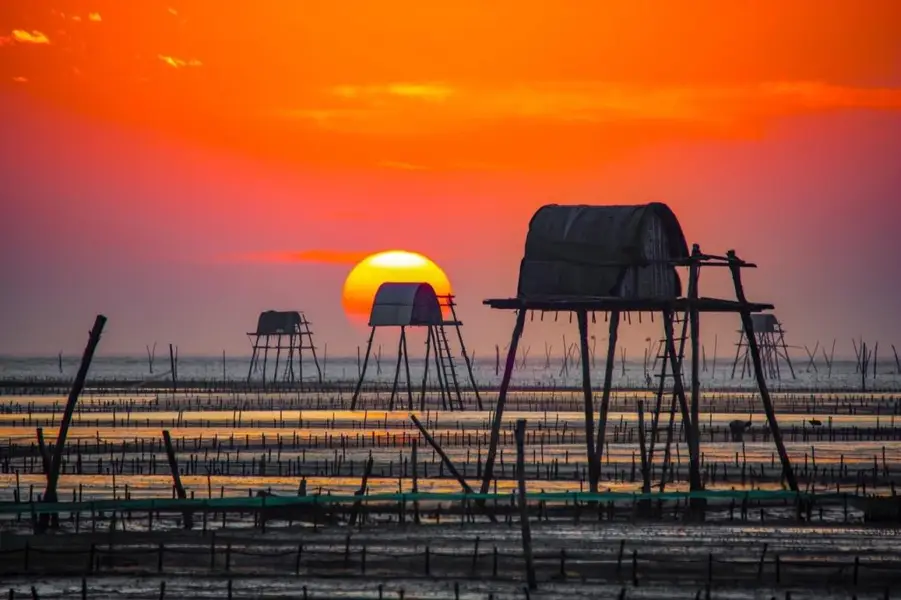
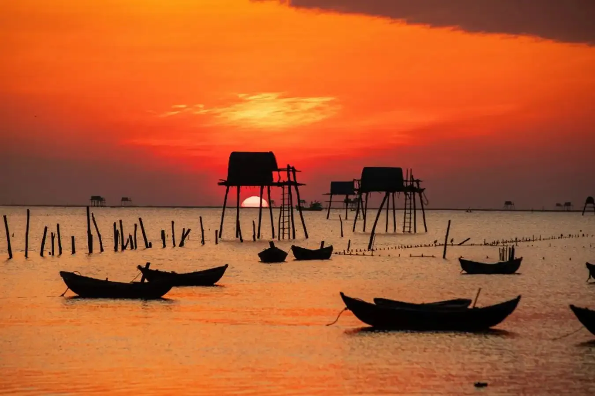
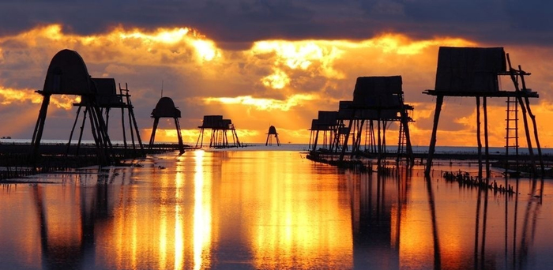
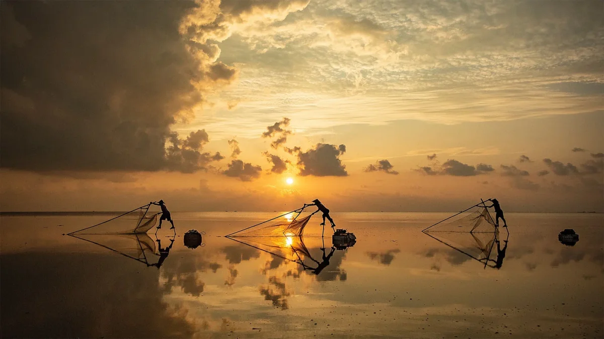
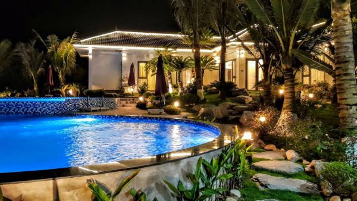
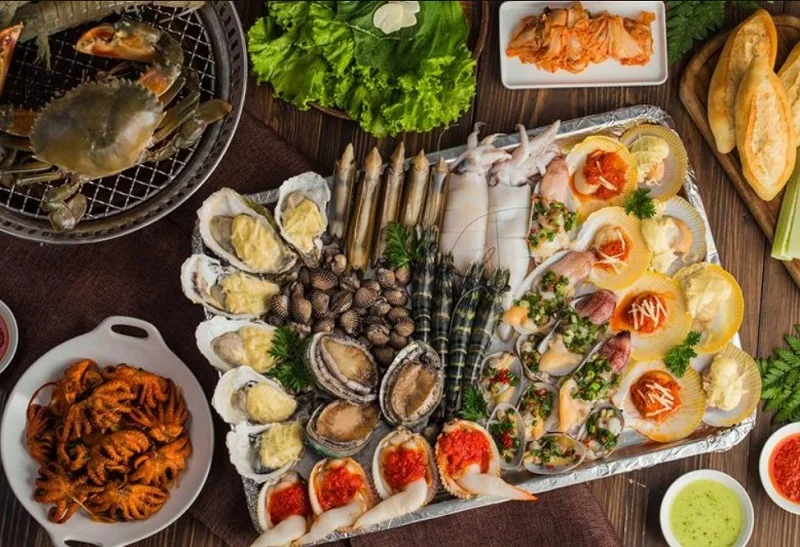

1. Sơ lược về biển Đồng Châu
Biển Đồng Châu nằm tại xã Đông Minh, huyện Tiền Hải, tỉnh Thái Bình, cách trung tâm thành phố Thái Bình khoảng 35 km. Đây là bãi biển duy nhất của tỉnh, nổi tiếng với vẻ đẹp hoang sơ, mộc mạc và bình dị. Không ồn ào, náo nhiệt như những bãi biển nổi tiếng khác, Đồng Châu mang một sức hấp dẫn riêng – nơi mà con người có thể tìm thấy sự tĩnh lặng, bình yên và một nhịp sống chậm rãi của miền quê ven biển Bắc Bộ.
2. Không gian và cảnh quan tự nhiên
 Biển Đồng Châu không có cát trắng trải dài hay sóng xanh dập dờn, mà đặc trưng bởi bãi bồi rộng lớn, kéo dài hàng chục cây số. Mỗi khi thủy triều rút, mặt bãi phẳng lì, in bóng trời mây, tạo nên một khung cảnh mênh mông, huyền ảo. Trên bãi biển, những chiếc chòi canh nuôi ngao vươn cao giữa trời nước bao la, vừa mộc mạc vừa nên thơ, trở thành hình ảnh đặc trưng không thể lẫn với bất kỳ bãi biển nào khác.
3. Hoạt động trải nghiệm và sinh kế

Đến Đồng Châu, du khách có thể trải nghiệm cuộc sống lao động của ngư dân như cào ngao, bắt sá sùng, đánh cá, hay chèo thuyền nan ra khơi. Đây cũng là vùng nuôi trồng thủy sản quan trọng của Thái Bình, nổi tiếng với nghề nuôi ngao, vạng và nhiều loại hải sản khác. Vào những buổi sáng sớm hoặc chiều hoàng hôn, cảnh người dân tất bật mưu sinh trên bãi triều hòa quyện cùng thiên nhiên rộng lớn, để lại trong lòng du khách nhiều cảm xúc khó quên.
4. Giá trị du lịch và văn hóa
 Biển Đồng Châu không chỉ là một điểm đến nghỉ dưỡng mà còn gắn liền với đời sống văn hóa – tín ngưỡng của người dân địa phương. Du khách đến đây có thể tham quan các di tích gần biển như Đền Tiên La, Đền Đồng Bằng, hay ghé chợ hải sản địa phương để thưởng thức những món ăn tươi ngon đặc trưng vùng biển. Hằng năm, Đồng Châu cũng là nơi diễn ra nhiều hoạt động cộng đồng, góp phần lưu giữ nét văn hóa của miền quê ven biển.
5. Lời kết
Biển Đồng Châu là một điểm đến dung dị nhưng đầy sức hút. Không ồn ào náo nhiệt, nơi đây mang đến cảm giác bình yên, chậm rãi và gắn bó với nhịp sống mộc mạc của ngư dân Thái Bình. Ai đã một lần đặt chân đến Đồng Châu hẳn sẽ lưu giữ trong lòng hình ảnh biển quê chân thật, hiền hòa, vừa như một bức tranh thiên nhiên, vừa như một lát cắt văn hóa độc đáo của vùng đất ven biển đồng bằng Bắc Bộ.